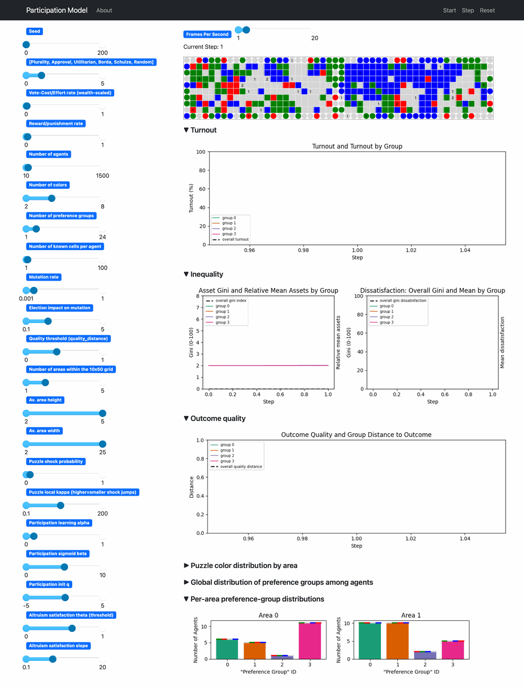
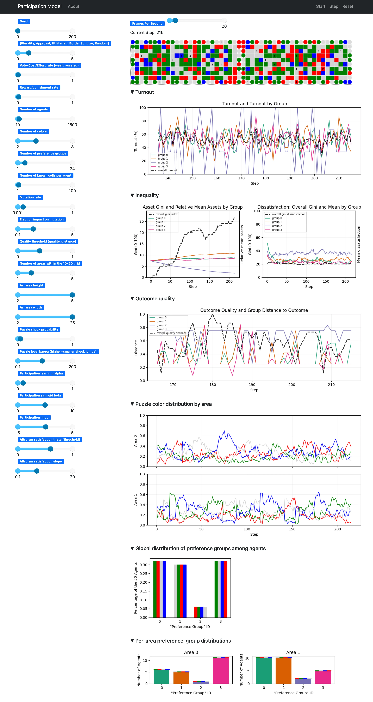

Demo
This is the quickest local path into DemocracySim. The demo config is small enough to run in seconds, but still shows the main feedback loop between elections, participation, inequality, and changing grid conditions.

Demo Config
configs/demo.yaml uses a compact setup:
- 50 agents
- 4 colors
- 4 preference groups
- 2 areas
- one headless run with replay output
Generate And Replay
Create a local environment once:
python -m venv .venv
source .venv/bin/activate
pip install -r requirements.txt
Generate a demo run:
python -m scripts.run_headless --config configs/demo.yaml --out-root tmp/demo_gif_run
Replay the stored run:
python -m scripts.run_replay tmp/demo_gif_run/run_0
Or start an un-seeded live demo:
python -m scripts.run --config configs/demo.yaml
What To Look At In The UI

The screenshot above shows the live server at a later step of the demo run. The main things worth reading are:
- The grid at the top shows the current election-time world state. It is the realized color distribution after earlier mutation and before the next round of decisions. For the background, see environment_dynamics.md and grid_state_concept.md.
- The
Turnoutsection shows both the overall participation trajectory and the grouped turnout series. This is the clearest entry point for the thesis question about participation dynamics. For the update logic behind it, see participation_learning.md. - The
Inequalitysection combines two views: asset inequality and relative mean assets by group on the left, and dissatisfaction inequality plus group means on the right. These are the two main inequality families used in the thesis. For the underlying mechanics, see core_mechanics.md and thesis_measurement_spec.md. - The
Outcome qualitysection shows the quality trajectory together with group distance to the elected outcome. This is where the model's quality target and group alignment become visible over time. See puzzle_quality_gate_concept.md and voting_rules.md. Puzzle color distribution by areashows the moving puzzle target in each area. In puzzle mode, this is the quality reference against which elected orderings are judged. See puzzle_quality_gate_concept.md.- The preference-group panels at the bottom show how agents are distributed across groups globally and by area. They help interpret the grouped turnout, inequality, and outcome-distance series above. See population_preferences.md.
Replay Your Own Run
Replay is deterministic because it reads recorded run artifacts rather than resimulating the model. Replay any stored run with:
python -m scripts.run_replay <run_dir>
Or search for runs interactively in data/:
python -m scripts.run_replay
Generate summary artifacts for a stored run:
python -m scripts.generate_summary --run-dir <run_dir>